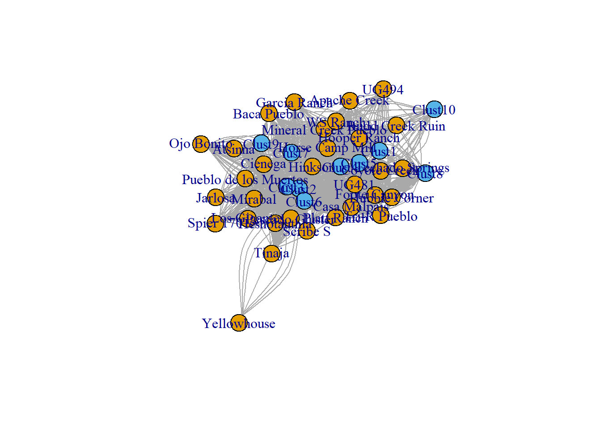
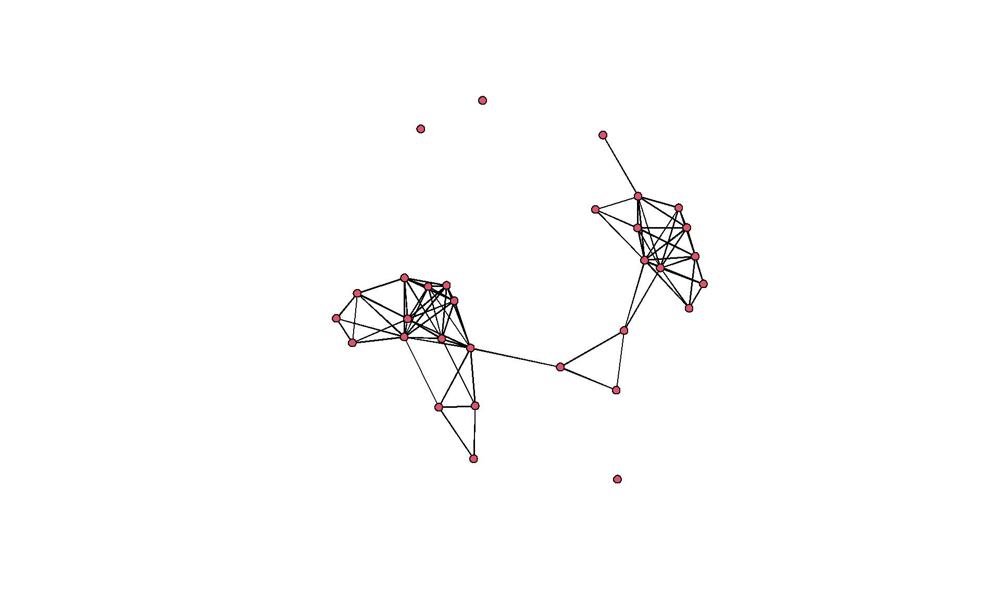
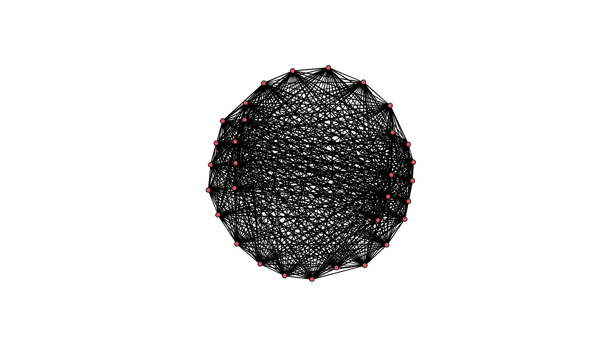
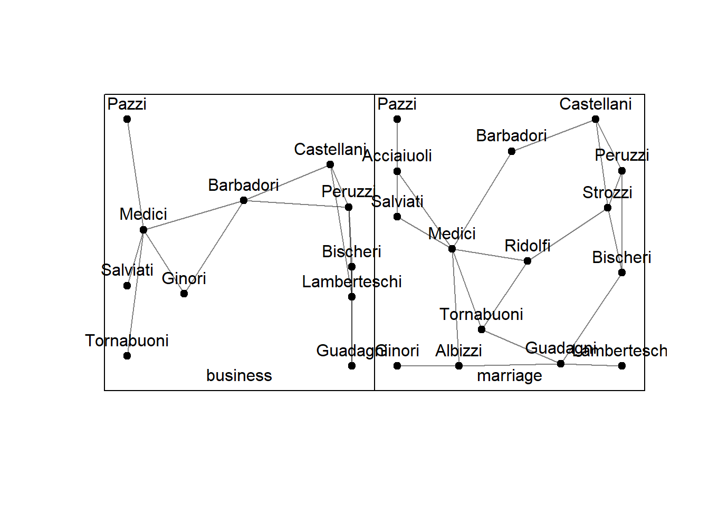

Section 3 Network Data
This section provides examples of many of the most common network formats and data types discussed in Chapter 3 of Brughmans and Peeples 2022. For most of the examples below we use the Cibola technological similarity network dataset (described in Chapter 2.8.3) because it is relatively small and easy to display in a variety of formats.
3.1 Network Data Formats
This section follows Chapter 3.2 in Brughmans and Peeples (2022) to provide examples of the same network and attribute data in a variety of different data formats as well as code for converting among these formats in R. In these examples we will primarily be using the “igraph” package but will also provide examples using the “statnet” suite of packages (which includes “network,” “sna,” “ergm,” and others). In order to be clear on which package we are using where we will use the package name in the function call (i.e., igraph::function_name or sna::function_name). See section 3.2 for more information.
Let’s first get started by initializing all of the packages we will use in this section.
# initialize packages
library(igraph)
library(statnet)
library(intergraph)
library(vegan)
library(multinet)3.1.1 Edge List
The edge list is a very quick and easy way to capture network data. It simply lists the edges in the network one by one by node id: E=((n1,n2),(n1,n3),(n1,n4),…,(ni,nj)). For the purposes of data management it is usually easiest to create an edge list as a data frame or matrix where each row represents a pair of nodes with connections going from the node in one column to the node in the second column (additional columns can be used for edge weight or other edge attributes).
In this example, we import the Cibola dataset in this format as a data frame and then convert it to a network object for further analysis. You can download the edgelist file here to follow along on your own. Since the edges in this network are undirected this will be a simple binary network, and we will use the “directed=FALSE” argument in the igraph::graph_from_edgelist function call.
# Read in edgelist file as dataframe
Cibola_edgelist <- read.csv(file="data/Cibola_edgelist.csv", header=TRUE)
# Examine the first several rows
head(Cibola_edgelist) ## FROM TO
## 1 Apache Creek Casa Malpais
## 2 Apache Creek Coyote Creek
## 3 Apache Creek Hooper Ranch
## 4 Apache Creek Horse Camp Mill
## 5 Apache Creek Hubble Corner
## 6 Apache Creek Mineral Creek Pueblo# Create graph object. The dataframe is converted to a matrix as that is required
# by this specific function. Since this is an undirected network directed = FALSE.
Cibola_net <- igraph::graph_from_edgelist(as.matrix(Cibola_edgelist), directed=FALSE)
# Display igraph network object and then plot a simple node-link diagram
Cibola_net## IGRAPH c884894 UN-- 30 167 --
## + attr: name (v/c)
## + edges from c884894 (vertex names):
## [1] Apache Creek--Casa Malpais Apache Creek--Coyote Creek
## [3] Apache Creek--Hooper Ranch Apache Creek--Horse Camp Mill
## [5] Apache Creek--Hubble Corner Apache Creek--Mineral Creek Pueblo
## [7] Apache Creek--Rudd Creek Ruin Apache Creek--Techado Springs
## [9] Apache Creek--Tri-R Pueblo Apache Creek--UG481
## [11] Apache Creek--UG494 Atsinna --Cienega
## [13] Atsinna --Los Gigantes Atsinna --Mirabal
## [15] Atsinna --Ojo Bonito Atsinna --Pueblo de los Muertos
## + ... omitted several edgesset.seed(3523) # set random seed to ensure graph layout stays the same each time.
plot(Cibola_net)
3.1.2 Adjacency List
The adjacency list consists of a set of rows, where the first node in each row is connected to all subsequent nodes in that same row. It is therefore more concise than the edge list (in which each relationship has its own row), but unlike the edge list it does not result in rows of equal length (each row in an edge list typically has two values, representing the pair of nodes). Adjacency lists are relatively rare in practice but can sometimes be useful formats for directly gathering network data in small networks and are supported by many network analysis software packages.
In the following chunk of code, we convert the network object we created above into an adjacency list and examine a couple of the rows.
# Convert edge list to adjacency list using igraph function
adj_list <- igraph::as_adj_edge_list(Cibola_net)
# examine adjacency list for the site Apache Creek
adj_list$`Apache Creek`## + 11/167 edges from c884894 (vertex names):
## [1] Apache Creek--Casa Malpais Apache Creek--Coyote Creek
## [3] Apache Creek--Hooper Ranch Apache Creek--Horse Camp Mill
## [5] Apache Creek--Hubble Corner Apache Creek--Mineral Creek Pueblo
## [7] Apache Creek--Rudd Creek Ruin Apache Creek--Techado Springs
## [9] Apache Creek--Tri-R Pueblo Apache Creek--UG481
## [11] Apache Creek--UG494# It is also possible to call specific nodes by number. In this case,
# site 2 is Casa Malpais
adj_list[[2]] ## + 11/167 edges from c884894 (vertex names):
## [1] Apache Creek--Casa Malpais Casa Malpais--Coyote Creek
## [3] Casa Malpais--Hooper Ranch Casa Malpais--Horse Camp Mill
## [5] Casa Malpais--Hubble Corner Casa Malpais--Rudd Creek Ruin
## [7] Casa Malpais--Techado Springs Casa Malpais--Tri-R Pueblo
## [9] Casa Malpais--UG481 Casa Malpais--Garcia Ranch
## [11] Casa Malpais--HinksonThe output for a particular node can be called by either referencing the name using the “$” call or by using “[[k]]” brackets where k is the row number of the node in question. The printed output is essentially a list of all of the edges incident on the node in question identified by the name of the sending and receiving node. Notice that the edge from Apache Creek–Casa Malpais shows up in both adjacency lists. That is because this is an undirected network so each pair of connected sites will be listed in each adjacency list.
3.1.3 Adjacency Matrix
The adjacency matrix is perhaps the most common and versatile network data format for data analysis in network science (in sociology it is sometimes referred to as the sociomatrix). It is a symmetric matrix of size n x n, with a set of rows and columns denoting the nodes in that network. The node names or identifiers are typically used to label both rows and columns. When a pair of nodes is connected by an edge (i.e. when they are adjacent), the corresponding cell will have an entry. The diagonal of this matrix represents “self loops” and can variously be defined as connected or unconnected depending on the application.
We can obtain an adjacency matrix object in R by converting our network object created above or by reading in a file directly with rows and columns denoting site and with 0 or 1 denoting the presence or absence of a relation. You can download the csv file to follow along on your own here.
# Convert to adjacency matrix then display
adj_mat <- igraph::as_adjacency_matrix(Cibola_net)
adj_mat## 30 x 30 sparse Matrix of class "dgCMatrix"
##
## Apache Creek . 1 1 1 1 1 1 1 1 1 1 1 . . . . . . . . . . . . . . . . .
## Casa Malpais 1 . 1 1 1 1 . 1 1 1 1 . . . . . . . . . . . 1 1 . . . . .
## Coyote Creek 1 1 . 1 1 1 1 1 1 1 1 . . . . . . . . . . . 1 . . . . . .
## Hooper Ranch 1 1 1 . 1 1 1 1 1 1 1 1 . . . . . . . . . . . . . . . . .
## Horse Camp Mill 1 1 1 1 . 1 1 1 1 1 1 . . . . . . . . . . . 1 1 . . . . .
## Hubble Corner 1 1 1 1 1 . 1 1 1 1 1 1 . . . . . . . . . . . 1 . . . . 1
## Mineral Creek Pueblo 1 . 1 1 1 1 . 1 . 1 1 1 . . . . . . . . . . 1 1 . . . . 1
## Rudd Creek Ruin 1 1 1 1 1 1 1 . 1 1 1 . . . . . . . . . . . 1 1 . . . . .
## Techado Springs 1 1 1 1 1 1 . 1 . 1 1 . . . . . . . . . . . . . . . . . .
## Tri-R Pueblo 1 1 1 1 1 1 1 1 1 . 1 1 . . . . . . . . . . . 1 . . . . 1
## UG481 1 1 1 1 1 1 1 1 1 1 . 1 . . . . . . . . . . 1 1 . . . . 1
## UG494 1 . . 1 . 1 1 . . 1 1 . . . . . . . . . . . . . . . . . .
## Atsinna . . . . . . . . . . . . . 1 1 1 1 1 1 1 1 . . . . . . . .
## Cienega . . . . . . . . . . . . 1 . 1 1 1 1 1 1 1 . . 1 1 1 1 1 .
## Los Gigantes . . . . . . . . . . . . 1 1 . 1 1 1 1 1 1 . . . 1 1 1 1 .
## Mirabal . . . . . . . . . . . . 1 1 1 . 1 1 1 1 1 . . 1 1 1 1 1 .
## Ojo Bonito . . . . . . . . . . . . 1 1 1 1 . 1 1 1 1 1 1 1 1 1 1 . .
## Pueblo de los Muertos . . . . . . . . . . . . 1 1 1 1 1 . 1 1 1 . . . 1 . 1 . .
## Scribe S . . . . . . . . . . . . 1 1 1 1 1 1 . 1 1 . 1 1 1 . 1 1 .
## Spier 170 . . . . . . . . . . . . 1 1 1 1 1 1 1 . 1 . . 1 1 1 1 1 .
## Tinaja . . . . . . . . . . . . 1 1 1 1 1 1 1 1 . . 1 1 1 1 1 1 .
## Baca Pueblo . . . . . . . . . . . . . . . . 1 . . . . . . . . . . . .
## Garcia Ranch . 1 1 . 1 . 1 1 . . 1 . . . . . 1 . 1 . 1 . . 1 1 . . . 1
## Hinkson . 1 . . 1 1 1 1 . 1 1 . . 1 . 1 1 . 1 1 1 . 1 . 1 1 . . 1
## Heshotauthla . . . . . . . . . . . . . 1 1 1 1 1 1 1 1 . 1 1 . 1 1 1 .
## Jarlosa . . . . . . . . . . . . . 1 1 1 1 . . 1 1 . . 1 1 . 1 1 .
## Pescado Cluster . . . . . . . . . . . . . 1 1 1 1 1 1 1 1 . . . 1 1 . 1 .
## Yellowhouse . . . . . . . . . . . . . 1 1 1 . . 1 1 1 . . . 1 1 1 . .
## Foote Canyon . . . . . 1 1 . . 1 1 . . . . . . . . . . . 1 1 . . . . .
## Platt Ranch . . . . . . . . . . . . . . . . . . . . . . 1 1 1 1 . 1 .
##
## Apache Creek .
## Casa Malpais .
## Coyote Creek .
## Hooper Ranch .
## Horse Camp Mill .
## Hubble Corner .
## Mineral Creek Pueblo .
## Rudd Creek Ruin .
## Techado Springs .
## Tri-R Pueblo .
## UG481 .
## UG494 .
## Atsinna .
## Cienega .
## Los Gigantes .
## Mirabal .
## Ojo Bonito .
## Pueblo de los Muertos .
## Scribe S .
## Spier 170 .
## Tinaja .
## Baca Pueblo .
## Garcia Ranch 1
## Hinkson 1
## Heshotauthla 1
## Jarlosa 1
## Pescado Cluster .
## Yellowhouse 1
## Foote Canyon .
## Platt Ranch .# Read in adjacency matrix and convert to network object for plotting
adj_mat2 <- read.csv(file="data/Cibola_adj.csv", header=T, row.names=1)
Cibola_net2 <- igraph::graph_from_adjacency_matrix(as.matrix(adj_mat2), mode="undirected")
set.seed(4352)
plot(Cibola_net2)
Note when you compare this network graph to the one produced based on the edge list there is an additional unconnected node (WS Ranch) that was not shown in the previous network. This is one of the advantages of an adjacency matrix is it provides a way of easily including unconnected nodes without having to manually add them or include self-loops.
3.1.4 Incidence Matrix
An incidence matrix is most frequently used to define connections among different sets of nodes in a two-mode or bipartite network where the rows and columns represent two different classes of nodes and the presence/absence or value of an edge is indicated in the corresponding cell.
By way of example here we can read in the data that were used to generate the one-mode networks of ceramic technological similarity we have been examining so far. In the corresponding data frame, each row represents a site and each column represents a specific cluster of technological attributes in cooking pottery (see Peeples 2018, pg. 100-104 for more details) with the number in each cell representing the count of each technological cluster at each site.
After creating the network object we plot it as a simple two-mode network with color representing node class. We discuss plotting options in greater detail in the visualization section of this appendix.
# Read in two-way table of sites and ceramic technological clusters
Cibola_clust <- read.csv(file="data/Cibola_clust.csv", header=TRUE, row.names=1)
Cibola_clust## Clust1 Clust2 Clust3 Clust4 Clust5 Clust6 Clust7 Clust8
## Apache Creek 7 3 6 16 6 1 1 2
## Atsinna 0 12 26 5 0 1 6 0
## Baca Pueblo 0 9 3 12 1 2 5 0
## Casa Malpais 2 15 7 28 17 16 2 5
## Cienega 2 28 34 2 0 10 11 0
## Coyote Creek 10 13 8 30 20 5 1 8
## Foote Canyon 12 21 1 12 8 8 3 15
## Garcia Ranch 2 8 6 4 6 4 1 0
## Heshotauthla 0 41 22 9 1 12 4 0
## Hinkson 2 27 17 23 5 10 3 1
## Hooper Ranch 15 8 8 28 25 3 5 4
## Horse Camp Mill 9 13 13 38 18 4 4 4
## Hubble Corner 14 11 8 21 8 5 0 7
## Jarlosa 0 17 7 1 0 10 4 0
## Los Gigantes 0 31 33 0 0 8 3 0
## Mineral Creek Pueblo 14 13 11 14 5 3 4 2
## Mirabal 0 37 46 3 1 12 1 0
## Ojo Bonito 0 9 5 3 0 2 3 0
## Pescado Cluster 1 59 49 4 2 13 0 0
## Platt Ranch 8 34 13 9 5 29 3 5
## Pueblo de los Muertos 0 31 49 4 0 7 3 0
## Rudd Creek Ruin 3 8 2 14 7 0 1 1
## Scribe S 0 29 41 10 1 8 2 0
## Spier 170 0 11 8 0 1 3 4 0
## Techado Springs 7 4 4 30 10 2 2 3
## Tinaja 0 10 14 1 2 4 1 0
## Tri-R Pueblo 15 8 4 18 7 6 1 3
## UG481 12 15 10 26 15 4 3 3
## UG494 8 2 4 4 2 1 2 2
## WS Ranch 15 8 1 23 8 0 22 3
## Yellowhouse 0 3 2 0 0 2 0 0
## Clust9 Clust10
## Apache Creek 0 0
## Atsinna 7 0
## Baca Pueblo 16 1
## Casa Malpais 1 0
## Cienega 5 1
## Coyote Creek 0 5
## Foote Canyon 1 1
## Garcia Ranch 0 0
## Heshotauthla 1 0
## Hinkson 3 1
## Hooper Ranch 0 0
## Horse Camp Mill 3 0
## Hubble Corner 0 1
## Jarlosa 2 0
## Los Gigantes 2 0
## Mineral Creek Pueblo 0 3
## Mirabal 3 0
## Ojo Bonito 4 0
## Pescado Cluster 1 0
## Platt Ranch 0 0
## Pueblo de los Muertos 11 0
## Rudd Creek Ruin 1 2
## Scribe S 0 0
## Spier 170 5 0
## Techado Springs 1 3
## Tinaja 3 0
## Tri-R Pueblo 1 0
## UG481 2 3
## UG494 0 0
## WS Ranch 17 4
## Yellowhouse 0 0# Convert into a network object using the incidence matrix format. Note that
# multiple=TRUE as we want this defined as a bipartite network.
Cibola_inc <- igraph::graph_from_incidence_matrix(Cibola_clust, directed=FALSE, multiple=TRUE)
Cibola_inc## IGRAPH c8d4b62 UN-B 41 2214 --
## + attr: type (v/l), name (v/c)
## + edges from c8d4b62 (vertex names):
## [1] Apache Creek--Clust1 Apache Creek--Clust1 Apache Creek--Clust1
## [4] Apache Creek--Clust1 Apache Creek--Clust1 Apache Creek--Clust1
## [7] Apache Creek--Clust1 Apache Creek--Clust2 Apache Creek--Clust2
## [10] Apache Creek--Clust2 Apache Creek--Clust3 Apache Creek--Clust3
## [13] Apache Creek--Clust3 Apache Creek--Clust3 Apache Creek--Clust3
## [16] Apache Creek--Clust3 Apache Creek--Clust4 Apache Creek--Clust4
## [19] Apache Creek--Clust4 Apache Creek--Clust4 Apache Creek--Clust4
## [22] Apache Creek--Clust4 Apache Creek--Clust4 Apache Creek--Clust4
## + ... omitted several edgesset.seed(4543)
# Plot as two-mode network
plot(Cibola_inc, vertex.color = as.numeric(V(Cibola_inc)$type)+1)
3.1.5 Node and Edge Information
Frequently we want to use other information about nodes and edges (node location, site type, edge weight, etc.) in our analyses and need to track these data in a separate attribute object or data column. One common way to do this is to simply create a data frame that contains the required attribute information and call specific data from this data frame when needed. As the following example shows, it is also possible to directly assign attributes to nodes or edges in a graph object and use those for subsequent analyses using the “V()” for vertices (nodes) and “E()” for edges calls within igraph.
In the following example we use this file which includes basic attribute data by site (node) for all sites in the network we’ve been working with here. This file includes x and y coordinates for the sites, information on the presence/absence and shape of Great Kiva public architectural features at those sites, and the Region to which they have been assigned.
# Read in attribute data and look at the first few rows.
Cibola_attr <- read.csv(file="data/Cibola_attr.csv", header=T)
head(Cibola_attr)## Site x y Great.Kiva Region
## 1 Apache Creek 724125 3747310 Rectangular Great Kiva Mogollon Highlands
## 2 Atsinna 726741 3895499 none El Morro Valley
## 3 Baca Pueblo 651431 3797143 none Upper Little Colorado
## 4 Casa Malpais 659021 3786211 Rectangular Great Kiva Upper Little Colorado
## 5 Cienega 738699 3887985 none El Morro Valley
## 6 Coyote Creek 671154 3780509 Rectangular Great Kiva Upper Little ColoradoIn order to assign an attribute to a particular node or edge we can use the V and E (vertex and edge) calls in igraph. For example, in the following example, we will assign a region variable to each node in the network we created above using the V function to assign a vertex attribute. You simply type the name of the network object in the parenthesis after V and use the “$” atomic variable symbol to assign a name to the attribute that will be associated with that network object.
# Assign a variable called "region" to the Cibola_net2 based on the
# column in the Cibola_attr table called "Region"
V(Cibola_net2)$region <- Cibola_attr$Region
# If we now call that attribute we get a vector listing each assigned value
V(Cibola_net2)$region## [1] "Mogollon Highlands" "El Morro Valley" "Upper Little Colorado"
## [4] "Upper Little Colorado" "El Morro Valley" "Upper Little Colorado"
## [7] "Mogollon Highlands" "Carrizo Wash" "Pescado Basin"
## [10] "West Zuni" "Upper Little Colorado" "Mariana Mesa"
## [13] "Mariana Mesa" "West Zuni" "El Morro Valley"
## [16] "Vernon Area" "El Morro Valley" "West Zuni"
## [19] "Pescado Basin" "Carrizo Wash" "El Morro Valley"
## [22] "Upper Little Colorado" "El Morro Valley" "West Zuni"
## [25] "Mariana Mesa" "El Morro Valley" "Mariana Mesa"
## [28] "Mariana Mesa" "Mariana Mesa" "Mogollon Highlands"
## [31] "Pescado Basin"# This can further be used for plotting or other analyses by calling the variable as a factor
set.seed(43534)
plot(Cibola_net2, vertex.color=as.factor(V(Cibola_net2)$region))
3.2 Types of Networks
This section roughly follows Brughmans and Peeples (2022) Chapter 3.3 to describe and provide examples in R format of many of the most common types of networks. In the examples below we will use the igraph R package but we also show how to use the statnet and network packages where applicable.
3.2.1 Simple Networks
Simple networks are unweighted and undirected one-mode networks. By way of example we will use the Cibola region adjacency matrix file and convert it into a simple network using both igraph and statnet/network. Notice how in both examples we specify that this is an undirected network (mode=“undirected” and directed=FALSE).
# Read in raw adjacency matrix file
adj_mat2 <- read.csv(file="data/Cibola_adj.csv", header=T, row.names=1)
# Convert to a network object using igraph
simple_net_i <- igraph::graph_from_adjacency_matrix(as.matrix(adj_mat2), mode="undirected")
simple_net_i## IGRAPH c9b8786 UN-- 31 167 --
## + attr: name (v/c)
## + edges from c9b8786 (vertex names):
## [1] Apache.Creek--Casa.Malpais Apache.Creek--Coyote.Creek
## [3] Apache.Creek--Hooper.Ranch Apache.Creek--Horse.Camp.Mill
## [5] Apache.Creek--Hubble.Corner Apache.Creek--Mineral.Creek.Pueblo
## [7] Apache.Creek--Rudd.Creek.Ruin Apache.Creek--Techado.Springs
## [9] Apache.Creek--Tri.R.Pueblo Apache.Creek--UG481
## [11] Apache.Creek--UG494 Atsinna --Cienega
## [13] Atsinna --Los.Gigantes Atsinna --Mirabal
## [15] Atsinna --Ojo.Bonito Atsinna --Pueblo.de.los.Muertos
## + ... omitted several edges# Covert to a network object using statnet/network
simple_net_s <- network::network(as.matrix(adj_mat2), directed=FALSE)
simple_net_s## Network attributes:
## vertices = 31
## directed = FALSE
## hyper = FALSE
## loops = FALSE
## multiple = FALSE
## bipartite = FALSE
## total edges= 167
## missing edges= 0
## non-missing edges= 167
##
## Vertex attribute names:
## vertex.names
##
## No edge attributesNotice how the two formats differ in the way they internally store network data in R and the way they print output to the screen but that both show a total of 31 nodes (vertices) and 167 edges (for the igraph object the first row specifies node and edge numbers between the – marks).
3.2.2 Directed Networks
Sometimes relationships are directional, meaning they have an orientation. For example, the flow of a river is directed downstream. In such cases we can incorporate this information in our network data by distinguishing between the source and the target of an edge.
By way of example here we will modify the Cibola network edge list to remove some number of edges at random to simulate directed network data. We will then convert these data into various network and matrix formats to illustrate how directed networks are stored and used in R.
# Read in edgelist file as dataframe
Cibola_edgelist <- read.csv(file="data/Cibola_edgelist.csv", header=TRUE)
# Create a random sub-sample of 125 edges out of the total 167 using the "sample" function
set.seed(45325)
EL2 <- Cibola_edgelist[sample(seq(1,nrow(Cibola_edgelist)), 125, replace=FALSE),]
# Create graph object from the edge list using the directed=TRUE argument
# to ensure this is treated as a directed network object.
directed_net <- igraph::graph_from_edgelist(as.matrix(EL2), directed=TRUE)
directed_net## IGRAPH c9c1a20 DN-- 30 125 --
## + attr: name (v/c)
## + edges from c9c1a20 (vertex names):
## [1] Coyote Creek ->Techado Springs
## [2] Hubble Corner ->Tri-R Pueblo
## [3] Hubble Corner ->Techado Springs
## [4] Heshotauthla ->Pueblo de los Muertos
## [5] Rudd Creek Ruin->Techado Springs
## [6] Heshotauthla ->Hinkson
## [7] Los Gigantes ->Yellowhouse
## [8] Los Gigantes ->Pueblo de los Muertos
## + ... omitted several edges# View as adjacency matrix of direted network object
as_adjacency_matrix(directed_net)## 30 x 30 sparse Matrix of class "dgCMatrix"
##
## Coyote Creek . 1 1 . . . 1 . . . . . 1 . . . . . . . . 1 . . . . . . 1
## Techado Springs . . . 1 . . . . . . . . . . . . . . . . . . . . . . . . 1
## Hubble Corner . 1 . 1 . . 1 . . . . . . . . . . . . 1 . . . . . . . . 1
## Tri-R Pueblo . . . . . . . . . . . . . . . . . 1 . . . . . . . . . . 1
## Heshotauthla . . . . . 1 . 1 1 1 1 1 . . 1 . 1 . 1 . 1 . . . . . . 1 .
## Pueblo de los Muertos . . . . . . . . . . . . . . . . . . 1 . . . . . . . . . .
## Rudd Creek Ruin . 1 . 1 . . . . . . . . . . . . . . . . . . . . . . . . 1
## Hinkson . . . 1 . . 1 . . . 1 1 . . . . . . . 1 1 1 . . 1 . . 1 .
## Los Gigantes . . . . . 1 . . . 1 . 1 . . 1 . . . . . . . . . . . . 1 .
## Yellowhouse . . . . . . . . . . . . . . . . . . . . . . . . . . . . .
## Mirabal . . . . . 1 . . . 1 . 1 . . 1 . 1 . 1 . . . . . . . . 1 .
## Scribe S . . . . . . . . . 1 . . . . . . . . 1 . . . . . . . . . .
## Hooper Ranch . 1 1 1 . . 1 . . . . . . . . . . . . 1 . 1 . . . . . . 1
## Cienega . . . . 1 . . 1 . 1 1 . . . 1 . 1 . 1 . . . . . . . . . .
## Spier 170 . . . . . . . . . 1 . . . . . . . . 1 . . . . . . . . . .
## Garcia Ranch . . . . 1 . 1 1 . . . 1 . . . . . . 1 1 . 1 . . 1 . . . 1
## Pescado Cluster . . . . . . . . . 1 . 1 . . 1 . . . 1 . . . . . . . . . .
## UG494 . . . . . . . . . . . . . . . . . . . . . . . . . . . . .
## Tinaja . . . . . . . . . 1 . . . . . . . . . . . . . . . . . . .
## Mineral Creek Pueblo . . . . . . . . . . . . . . . . . . . . . . . . . . . . 1
## Jarlosa . . . . . . . . 1 1 1 . . . 1 . . . . . . . . . . . . 1 .
## Horse Camp Mill . 1 1 1 . . . . . . . . . . . . . . . . . . . . . . . . 1
## Foote Canyon . . 1 . . . . . . . . . . . . 1 . . . 1 . . . . . . . . 1
## Casa Malpais . . 1 . . . 1 1 . . . . 1 . . 1 . . . . . 1 . . . . . . 1
## Platt Ranch . . . . . . . . . 1 . . . . . . . . . . . . . . . . . . .
## Apache Creek 1 1 . . . . 1 . . . . . . . . . . 1 . 1 . 1 . 1 . . . . .
## Atsinna . . . . . 1 . . 1 . 1 1 . 1 1 . . . 1 . . . . . . . . . .
## Ojo Bonito . . . . . 1 . . . . . 1 . . 1 . 1 . . . . . . . . . . . .
## UG481 . . . . . . . . . . . . . . . . . 1 . . . . . . . . . . .
## Baca Pueblo . . . . . . . . . . . . . . . . . . . . . . . . . . . 1 .
##
## Coyote Creek .
## Techado Springs .
## Hubble Corner .
## Tri-R Pueblo .
## Heshotauthla .
## Pueblo de los Muertos .
## Rudd Creek Ruin .
## Hinkson .
## Los Gigantes .
## Yellowhouse .
## Mirabal .
## Scribe S .
## Hooper Ranch .
## Cienega .
## Spier 170 .
## Garcia Ranch .
## Pescado Cluster .
## UG494 .
## Tinaja .
## Mineral Creek Pueblo .
## Jarlosa .
## Horse Camp Mill .
## Foote Canyon .
## Casa Malpais .
## Platt Ranch .
## Apache Creek .
## Atsinna .
## Ojo Bonito .
## UG481 .
## Baca Pueblo .# Plot network
set.seed(4353)
plot(directed_net)
Notice that when we look at the igraph network plot it has arrows indicating the direction of connection in the edge list. If you are making your own directed edge list, the sending node by default will be in the left column and the receiving node in the right column. In the adjacency matrix the upper and lower triangles are no longer identical. Again, if you are generating your own adjacency matrix, you can simply mark edges sent from nodes denoted as rows and edges received from the same nodes as columns. Finally, in the plot, since R recognizes this as a directed igraph object when we plot the network, it automatically shows arrows indicating the direction of the edge.
3.2.3 Signed, Categorized, and Valued Networks
In many situations we want to add values to specific edges such as signs (sometimes called valences) or weights defining the strength or nature of relationships. There are a variety of ways that we can record and assign such weights or values to edges in R. The simplest way is to directly include that information in one of the formats described above such as an edge list or adjacency matrix. For example, we can add a third column to an edge list that denotes the weight or sign of each edge or can fill the cells in an adjacency matrix with specific values rather than simply 1s or 0s.
In this example, we will random generate edge weights for the Cibola network edge list and adjacency matrix to illustrate how R handles these formats.
# Read in edge list file as data frame
Cibola_edgelist <- read.csv(file="data/Cibola_edgelist.csv", header=TRUE)
# Add additional column of weights as random integers between 1 and 4 for each edge
Cibola_edgelist$Weight <- sample(seq(1,4), nrow(Cibola_edgelist), replace=TRUE)
# Create weighted network object calling only the first two columns
weighted_net <- igraph::graph_from_edgelist(as.matrix(Cibola_edgelist[,1:2]), directed=FALSE)
# add edge attribute to indicate weight
E(weighted_net)$weight <- Cibola_edgelist$Weight
# Explore the first few rows of network object
head(get.data.frame(weighted_net))## from to weight
## 1 Apache Creek Casa Malpais 4
## 2 Apache Creek Coyote Creek 1
## 3 Apache Creek Hooper Ranch 1
## 4 Apache Creek Horse Camp Mill 3
## 5 Apache Creek Hubble Corner 4
## 6 Apache Creek Mineral Creek Pueblo 4# View network as adjacency matrix. Notice the attr="weight" command that
# indicates which edge attribute to use for values in the matrix
as_adjacency_matrix(weighted_net, attr="weight")## 30 x 30 sparse Matrix of class "dgCMatrix"
##
## Apache Creek . 4 1 1 3 4 4 3 4 3 3 1 . . . . . . . . . . . . . . . . .
## Casa Malpais 4 . 1 1 2 3 . 4 4 3 2 . . . . . . . . . . . 2 1 . . . . .
## Coyote Creek 1 1 . 1 4 2 3 2 2 1 2 . . . . . . . . . . . 4 . . . . . .
## Hooper Ranch 1 1 1 . 4 1 2 2 3 3 1 3 . . . . . . . . . . . . . . . . .
## Horse Camp Mill 3 2 4 4 . 2 1 3 1 4 4 . . . . . . . . . . . 2 4 . . . . .
## Hubble Corner 4 3 2 1 2 . 2 3 1 1 2 4 . . . . . . . . . . . 4 . . . . 3
## Mineral Creek Pueblo 4 . 3 2 1 2 . 2 . 1 4 1 . . . . . . . . . . 4 1 . . . . 3
## Rudd Creek Ruin 3 4 2 2 3 3 2 . 1 2 3 . . . . . . . . . . . 4 4 . . . . .
## Techado Springs 4 4 2 3 1 1 . 1 . 2 4 . . . . . . . . . . . . . . . . . .
## Tri-R Pueblo 3 3 1 3 4 1 1 2 2 . 4 1 . . . . . . . . . . . 1 . . . . 2
## UG481 3 2 2 1 4 2 4 3 4 4 . 3 . . . . . . . . . . 1 2 . . . . 1
## UG494 1 . . 3 . 4 1 . . 1 3 . . . . . . . . . . . . . . . . . .
## Atsinna . . . . . . . . . . . . . 2 3 2 1 2 4 4 1 . . . . . . . .
## Cienega . . . . . . . . . . . . 2 . 2 1 3 2 3 4 1 . . 1 3 2 1 4 .
## Los Gigantes . . . . . . . . . . . . 3 2 . 4 1 2 2 1 4 . . . 4 2 3 3 .
## Mirabal . . . . . . . . . . . . 2 1 4 . 1 4 1 2 4 . . 2 1 2 4 1 .
## Ojo Bonito . . . . . . . . . . . . 1 3 1 1 . 3 4 1 3 3 4 1 1 3 3 . .
## Pueblo de los Muertos . . . . . . . . . . . . 2 2 2 4 3 . 4 4 1 . . . 2 . 3 . .
## Scribe S . . . . . . . . . . . . 4 3 2 1 4 4 . 1 2 . 3 3 2 . 4 2 .
## Spier 170 . . . . . . . . . . . . 4 4 1 2 1 4 1 . 1 . . 1 2 1 4 3 .
## Tinaja . . . . . . . . . . . . 1 1 4 4 3 1 2 1 . . 1 4 3 3 2 1 .
## Baca Pueblo . . . . . . . . . . . . . . . . 3 . . . . . . . . . . . .
## Garcia Ranch . 2 4 . 2 . 4 4 . . 1 . . . . . 4 . 3 . 1 . . 2 1 . . . 4
## Hinkson . 1 . . 4 4 1 4 . 1 2 . . 1 . 2 1 . 3 1 4 . 2 . 1 2 . . 4
## Heshotauthla . . . . . . . . . . . . . 3 4 1 1 2 2 2 3 . 1 1 . 4 1 2 .
## Jarlosa . . . . . . . . . . . . . 2 2 2 3 . . 1 3 . . 2 4 . 3 2 .
## Pescado Cluster . . . . . . . . . . . . . 1 3 4 3 3 4 4 2 . . . 1 3 . 1 .
## Yellowhouse . . . . . . . . . . . . . 4 3 1 . . 2 3 1 . . . 2 2 1 . .
## Foote Canyon . . . . . 3 3 . . 2 1 . . . . . . . . . . . 4 4 . . . . .
## Platt Ranch . . . . . . . . . . . . . . . . . . . . . . 4 1 3 4 . 3 .
##
## Apache Creek .
## Casa Malpais .
## Coyote Creek .
## Hooper Ranch .
## Horse Camp Mill .
## Hubble Corner .
## Mineral Creek Pueblo .
## Rudd Creek Ruin .
## Techado Springs .
## Tri-R Pueblo .
## UG481 .
## UG494 .
## Atsinna .
## Cienega .
## Los Gigantes .
## Mirabal .
## Ojo Bonito .
## Pueblo de los Muertos .
## Scribe S .
## Spier 170 .
## Tinaja .
## Baca Pueblo .
## Garcia Ranch 4
## Hinkson 1
## Heshotauthla 3
## Jarlosa 4
## Pescado Cluster .
## Yellowhouse 3
## Foote Canyon .
## Platt Ranch .# Plot the network
set.seed(574)
plot(weighted_net, edge.width=E(weighted_net)$weight)
Notice in the final plot that line thickness is used to indicate edges with various weights. We will explore further options for such visualizations in the network visualizations section of this appendix.
3.2.4 Two-mode Networks and Affiliation Networks
Two-mode networks are networks where two separate categories of nodes are defined with a structural variable (edges) between these categories. In sociology, two-mode networks are often used for studying the affiliation of individuals with organizations, such as the presence of professionals on the boards of companies or the attendance of scholars at conferences (referred to as affiliation networks).
Two-mode network data are typically recorded in a two-way table with rows and columns representing two different classes of nodes and with individual cells representing the presence/absence or weight of edges between those classes of nodes. By way of example here we will return to the table of ceramic technological clusters by sites for the Cibola region data. The simplest way to create an unweighted two-mode network from these data is to create a network object directly from a two-way table as we saw above. In this example this will create an edge between each site and each technological cluster present there irrespective of relative frequency.
# Read in two-way table of sites and ceramic technological clusters
Cibola_clust <- read.csv(file="data/Cibola_clust.csv", header=TRUE, row.names=1)
# Create network from incidence matrix based on presence/absence of a cluster at a site
Cibola_inc <- igraph::graph_from_incidence_matrix(Cibola_clust, directed=FALSE, multiple=TRUE)
Cibola_inc## IGRAPH ca0d752 UN-B 41 2214 --
## + attr: type (v/l), name (v/c)
## + edges from ca0d752 (vertex names):
## [1] Apache Creek--Clust1 Apache Creek--Clust1 Apache Creek--Clust1
## [4] Apache Creek--Clust1 Apache Creek--Clust1 Apache Creek--Clust1
## [7] Apache Creek--Clust1 Apache Creek--Clust2 Apache Creek--Clust2
## [10] Apache Creek--Clust2 Apache Creek--Clust3 Apache Creek--Clust3
## [13] Apache Creek--Clust3 Apache Creek--Clust3 Apache Creek--Clust3
## [16] Apache Creek--Clust3 Apache Creek--Clust4 Apache Creek--Clust4
## [19] Apache Creek--Clust4 Apache Creek--Clust4 Apache Creek--Clust4
## [22] Apache Creek--Clust4 Apache Creek--Clust4 Apache Creek--Clust4
## + ... omitted several edgesset.seed(4537643)
# Plot as two-mode network
plot(Cibola_inc, vertex.color = as.numeric(V(Cibola_inc)$type)+1)
In this case since most clusters are present at most sites, this creates a pretty busy network that may not be particularly useful. An alternative to this is to define some threshold (either in terms of raw count or proportion) to define an edge between a node of one class and another. We provide an example here and build a function that you could modify to do this for your own data. In this function you can set the proportion threshold that you would like to used to define an edge between two classes of nodes. If the proportion of that cluster at that site is greater than or equal to that threshold an edge will be present.
# Define function for creating incidence matrix with threshold
two_mode <- function (x, thresh=0.25) {
# Create matrix of proportions from x input into function
temp <- prop.table(as.matrix(x), 1)
# Define anything with greater than or equal to threshold as present (1)
temp[temp>=thresh] <- 1
# Define all other cells as absent (0)
temp[temp<1] <- 0
# Return the new binarized table as output of the function
return(temp)}
# Run the function and create network object
mod_clust <- two_mode(Cibola_clust, thresh=0.25) # thresh is set to 0.25 but could be any values from 0-1
# Examine the first few rows
head(mod_clust)## Clust1 Clust2 Clust3 Clust4 Clust5 Clust6 Clust7 Clust8 Clust9
## Apache Creek 0 0 0 1 0 0 0 0 0
## Atsinna 0 0 1 0 0 0 0 0 0
## Baca Pueblo 0 0 0 0 0 0 0 0 1
## Casa Malpais 0 0 0 1 0 0 0 0 0
## Cienega 0 1 1 0 0 0 0 0 0
## Coyote Creek 0 0 0 1 0 0 0 0 0
## Clust10
## Apache Creek 0
## Atsinna 0
## Baca Pueblo 0
## Casa Malpais 0
## Cienega 0
## Coyote Creek 0# Create a graph matrix from the new incidence matrix
two_mode_net <- igraph::graph_from_incidence_matrix(mod_clust, directed=FALSE, multiple=TRUE)
# Plot results
set.seed(4537)
plot(two_mode_net, vertex.color = as.numeric(V(Cibola_inc)$type)+1)
Notice how there are now far fewer ties and if you are familiar with the sites in question you might notice some clear regional patterning.
It is also possible to create one-mode projections of the two-mode data here using simple matrix algebra. All you need to do is multiply a matrix by the transpose of that matrix. The results will be a adjacency matrix for whichever set of nodes represented the rows in the first matrix in the matrix multiplication. Here is an example using the “mod_clust” incidence matrix with threshold created above. In the resulting incidence matrix individual cells will represent the number of different edges in common between the nodes in question and can be treated like an edge weight. The diagonal of the matrix will be the total number of clusters that were present in a site assemblage.
# In R the command "%*%" indicates matrix multiplication and "t()" gives
# the transpose of the matrix within the parentheses.
# Lets first create a one-mode projection focused on sites
site_mode <- mod_clust %*% t(mod_clust)
site_net <- igraph::graph_from_adjacency_matrix(site_mode, mode="undirected", diag=FALSE)
plot(site_net)
# Now lets create a one-mode projection focused on ceramic technological clusters.
# Notice that the only change is we switch which side of the matrix multiplication
# we transpose.
clust_mode <- t(mod_clust) %*% mod_clust
clust_mode## Clust1 Clust2 Clust3 Clust4 Clust5 Clust6 Clust7 Clust8 Clust9 Clust10
## Clust1 1 0 0 0 0 0 0 0 0 0
## Clust2 0 16 9 1 0 2 0 0 0 0
## Clust3 0 9 10 0 0 1 0 0 0 0
## Clust4 0 1 0 11 1 0 0 0 0 0
## Clust5 0 0 0 1 1 0 0 0 0 0
## Clust6 0 2 1 0 0 2 0 0 0 0
## Clust7 0 0 0 0 0 0 0 0 0 0
## Clust8 0 0 0 0 0 0 0 0 0 0
## Clust9 0 0 0 0 0 0 0 0 1 0
## Clust10 0 0 0 0 0 0 0 0 0 0clust_net <- igraph::graph_from_adjacency_matrix(clust_mode, mode="undirected", diag=FALSE)
plot(clust_net)
3.2.5 Similarity Networks
Similarity networks simply refer to one-mode networks where nodes are defined as entities of interest with edges defined and/or weighted based on some metric of similarity (or distance) defined based on the features, attributes, or assemblage associated with that node. Such an approach is frequently used in archaeology to explore material cultural networks where nodes are contexts of interests (e.g., sites, excavation units, houses, etc.) and edges are defined or weighted based on similarities in the relative frequencies of artifacts or particular classes of artifacts recovered in those contexts.
There are many different ways to define and track similarity network data for use in R. In this example, we will show several methods using the affiliation data we used in the previous example. Specifically, we will define and weight edges based on similarities in the frequencies of ceramic technological clusters at sites in our Cibola region sample.
For most of these examples we will use the statnet package and the network package within it rather than igraph because statnet has a few additional functions that are useful when working with similarity data. In the following examples, we will first demonstrate several different similarity/distance metrics and then discuss approaches to binarization of these similarity networks and other options for working with weighted data.
Brainerd-Robinson Similarity
The first metric we will explore here is a rescaled version of the Brainerd-Robinson (BR) similarity metric. This BR measure is commonly used in archaeology including in a number of recent (and not so recent) network studies. This measure represents the total similarity in proportional representation of categories and is defined as:
\[S = {\frac{2-\sum_{k} \left|x_{k} - y_{k}\right|} {2}}\]
where, for all categories \(k\), \(x\) is the proportion of \(k\) in the first assemblage and \(y\) is the proportion of \(k\) in the second. We subtract the sum from 2 as 2 is the maximum proportional difference possible between two samples. We further divide the result by 2. This provides a scale of similarity from 0-1 where 1 is perfect similarity and 0 indicates no similarity. The chunk below defines the code for calculating this modified BR similarity measure. Note here we use a distance metric called “Manhattan Distance” built into the “vegan” package in R. This metric is identical to the Brainerd-Robinson metric.
# Read in raw data
Cibola_clust <- read.csv(file="data/Cibola_clust.csv", header=TRUE, row.names=1)
# First we need to convert the ceramic technological clusters into proportions
clust_p <- prop.table(as.matrix(Cibola_clust), margin = 1)
# The following line uses the vegdist function in the vegan package
# to calculate the Brainard-Robinson similarity score. Since vegdist
# by default defines an unscaled distance we must subtract the results
# from 2 and then divide by 2 to get a similarity scaled from 0 to 1.
Cibola_BR <- (2-as.matrix(vegan::vegdist(clust_p, method='manhattan')))/2
# Lets look at the first few rows.
Cibola_BR[1:4,1:4]## Apache Creek Atsinna Baca Pueblo Casa Malpais
## Apache Creek 1.0000000 0.3433584 0.4455782 0.7050691
## Atsinna 0.3433584 1.0000000 0.5750090 0.3740804
## Baca Pueblo 0.4455782 0.5750090 1.0000000 0.5608953
## Casa Malpais 0.7050691 0.3740804 0.5608953 1.0000000At this point we could simply define this as a weighted network object where weights are equal to the similarity scores, or we could define a threshold for defining edges as present or absent. We will discuss these options in detail after presenting other similarity/distance metrics.
Morisita’s Overlap Index
Another measure that has been used for defining similarities among assemblages for archaeological similarity networks is Morisita’s overlap index. This measure is a measure of the overlap of individual assemblages within a larger population that takes the size of samples into account. Specifically, the approach assumes that as sample size increases diversity will likely increase. This measure produces results that are very similar to the Brainerd-Robinson metric in practice in most cases but this measure may be preferred where there are dramatic differences in assemblage sizes among observations.
Morisita’s index is calculated as:
\[C_D=\frac{2 \Sigma^Sx_iy_i}{(D_x + D_y)XY}\]
Where: \(x_i\) is the number of rows where category \(i\) is represented in the total \(X\) from the population. \(y_i\) is the number of rows where category \(i\) is presented in the total \(Y\) from the population. \(D_x\) and \(D_y\) are the Simpson’s diversity index values for \(x\) and \(y\) respectively. \(S\) is the total number of columns.
This metric ranges from 0 (where no categories overlap at all) to 1 where the categories occur in the same proportions in both samples. Because this metric works on absolute counts we can run the vegdist function directly on the “Cibola_clust” object. Because we want a similarity rather than a distance (which is the default for this function in R) we subtract the results from 1.
# Calculate matrix of Morisita similarities based on the Cibola_clust two-way table.
Cibola_Mor <- 1-as.matrix(vegan::vegdist(Cibola_clust, method='morisita'))
Cibola_Mor[1:4,1:4]## Apache Creek Atsinna Baca Pueblo Casa Malpais
## Apache Creek 1.0000000 0.4885799 0.6014729 0.9060751
## Atsinna 0.4885799 1.0000000 0.5885682 0.4459998
## Baca Pueblo 0.6014729 0.5885682 1.0000000 0.6529069
## Casa Malpais 0.9060751 0.4459998 0.6529069 1.0000000\(\chi^{2}\) Distance
The next measure we will use is the \(\chi^{2}\) distance metric which is the basis of correspondence analysis and related methods commonly used for frequency seriation in archaeology (note that this should probably really be called the \(\chi\) distance since the typical form we use is not squared, but the name persists this way in the literature so that’s what we use here). This measure is defined as:
\[\chi_{jk} = \sqrt{\sum \frac 1{c_{j}} ({x_{j}-y_{j})^{2}}}\]
where \(c_j\) denotes the \(j_{th}\) element of the average row profile (the proportional abundance of \(j\) across all rows) and \(x\) and \(y\) represent row profiles for the two sites under comparison. This metric therefore takes raw abundance (rather than simply proportional representation) into account when defining distance between sites. The definition of this metric is such that rare categories play a greater role in defining distances among sites than common categories (as in correspondence analysis). This measure has a minimum value of 0 and no theoretical upper limit.
The code for calculating \(\chi^{2}\) distances is defined in the chunk below and a new object called “Cibola_X” is created using this measure. It is sometimes preferable to rescale this measure so that it is bounded between 0 and 1. We create a second object called “Cibola_X01” which represents rescaled distances by simply dividing the matrix by the maximum observed value (there are many other ways to do this but this will be fine for our demonstration purposes). Again, we subtract these results from 1 to convert a distance to a similarity.
# Define function for calculating chi-squared distance
chi_dist <- function(x) {
rowprof <- x/apply(x,1,sum) # calculates the profile for every row
avgprof <- apply(x,2,sum)/sum(x) # calculates the average profile
# creates a distance object of chi-squared distances
chid <- dist(as.matrix(rowprof)%*%diag(1/sqrt(avgprof)))
# return the results
return(as.matrix(chid))}
# Run the script and then create the rescaled 0-1 version
Cibola_X <- chi_dist(Cibola_clust)
Cibola_X01 <- 1-(Cibola_X/max(Cibola_X))
Cibola_X01[1:4,1:4]## Apache Creek Atsinna Baca Pueblo Casa Malpais
## Apache Creek 1.0000000 0.2904662 0.1010795 0.6166508
## Atsinna 0.2904662 1.0000000 0.3393173 0.2999925
## Baca Pueblo 0.1010795 0.3393173 1.0000000 0.1469591
## Casa Malpais 0.6166508 0.2999925 0.1469591 1.0000000Creating Network Objects from Similarity Matrices
Now that we have defined our three measures of similarity, the next step is to convert these into network objects that our R packages will be able to work with. We can do this by either creating binary networks (where ties are either present or absent) or weighted networks (which in many cases are simply the raw similarity/distance matrices we calculated above). We will provide examples of both approaches, starting with simple binary networks. There are many ways to define networks from matrices like those we generated above and our examples below should not been seen as an exhaustive set of procedures.
Creating binary network objects
First, we will produce a network object based on our BR similarity matrix created above. In this example, we define ties as present between pairs of sites when they share more than 65% commonality (BR > 0.65) in terms of the proportions of ceramics recovered from pairs of sites.
In the code below, the event2dichot function (from the “statnet” package) takes our matrix and divides it into 1s and 0s based on the cut off we choose. Here we’re using and ‘absolute’ cut off meaning we’re assigning a specific value to use as the cut off (0.65). We then send the output of this function to the network function just as before.
# Define our binary network object from BR similarity
BRnet <- network(event2dichot(Cibola_BR, method='absolute', thresh=0.65), directed=FALSE)
# Now let's add names for our nodes based on the row names of our original matrix
BRnet %v% 'vertex.names' <- row.names(Cibola_clust)
# look at the results.
BRnet## Network attributes:
## vertices = 31
## directed = FALSE
## hyper = FALSE
## loops = FALSE
## multiple = FALSE
## bipartite = FALSE
## total edges= 167
## missing edges= 0
## non-missing edges= 167
##
## Vertex attribute names:
## vertex.names
##
## No edge attributes# plot network using default layout
set.seed(7564)
plot(BRnet)
In the next chunk of code we will use the \(\chi^2\) distances to create binary networks. This time, we will not use an absolute value to define ties as present, but instead will define those similarities greater than 80 percent of all similarities as present. We will then once again plot just as above.
# Note we use 1 minus chacoX01 here so to convert a distance to a similarity
Xnet <- network(event2dichot(Cibola_X01, method='quantile', thresh=0.80), directed=FALSE)
# Once again add vertext names
Xnet %v% 'vertex.names' <- row.names(Cibola_clust)
# look at the results
Xnet## Network attributes:
## vertices = 31
## directed = FALSE
## hyper = FALSE
## loops = FALSE
## multiple = FALSE
## bipartite = FALSE
## total edges= 80
## missing edges= 0
## non-missing edges= 80
##
## Vertex attribute names:
## vertex.names
##
## No edge attributes# plot network using default layout
set.seed(346)
plot(Xnet)
Creating Weighted Network Objects
It is also possible to use R to create weighted networks where individual edges are valued. We have found that this works reasonably well with networks of co-presence or something similar (counts of mentions in texts or monuments for example) but this does not perform well when applied to large similarity or distance matrices (because every possible link has a value, the network gets unwieldy very fast). In the latter case, we have found it is often better to just work directly with the underlying similarity/distance matrix.
If you do, however, chose do create a weighted network object from a similarity matrix it only requires a slight modification from the procedure above. In the chunk of code below, we will simply add the arguments “ignore.eval=F” and “names.eval=‘weight’” to let the network function know we would like weights to be retained and we would like that attribute called ‘weight’. We will apply this to the matrix of Morisita similarities defined above and then plot the result.
# create weighted network object from co-occurrence matrix by adding the ignore.eval=F argument
Mor_wt <- network(Cibola_Mor, directed=FALSE, ignore.eval=FALSE, names.eval='weight')
Mor_wt %v% 'vertex.names' <- row.names(Cibola_Mor)
Mor_wt## Network attributes:
## vertices = 31
## directed = FALSE
## hyper = FALSE
## loops = FALSE
## multiple = FALSE
## bipartite = FALSE
## total edges= 465
## missing edges= 0
## non-missing edges= 465
##
## Vertex attribute names:
## vertex.names
##
## Edge attribute names:
## weight# plot weighted network using default layout
set.seed(4634)
plot(Mor_wt)
The resulting network is nearly complete so it is a bit unwieldy for plotting but calculating network statistics on this weighted network can often still be useful as we will see in the exploratory analysis section.
Converting Among Network Object Formats
In most of the examples in this document we have been using the igraph package but for the similarity networks we chose to use statnet due to the convenience of functions for working directly with similarity matrices. Not to worry as it is easy to convert one format to another and preserve all of the attributes using a package called intergraph. By way of example below we can covert the weighted network object we created in the previous step and convert it to a igraph object and view the attributes using the “asIgraph” function. If we wanted to go the other direction and covert a igraph object to a statnet/network object we would instead use “asNetwrok”.
Mor_wt_i <- asIgraph(Mor_wt)
Mor_wt_i## IGRAPH cb72f2f U-W- 31 465 --
## + attr: na (v/l), vertex.names (v/c), na (e/l), weight (e/n)
## + edges from cb72f2f:
## [1] 1-- 2 1-- 3 1-- 4 1-- 5 1-- 6 1-- 7 1-- 8 1-- 9 1--10 1--11 1--12 1--13
## [13] 1--14 1--15 1--16 1--17 1--18 1--19 1--20 1--21 1--22 1--23 1--24 1--25
## [25] 1--26 1--27 1--28 1--29 1--30 1--31 2-- 3 2-- 4 2-- 5 2-- 6 2-- 7 2-- 8
## [37] 2-- 9 2--10 2--11 2--12 2--13 2--14 2--15 2--16 2--17 2--18 2--19 2--20
## [49] 2--21 2--22 2--23 2--24 2--25 2--26 2--27 2--28 2--29 2--30 2--31 3-- 4
## [61] 3-- 5 3-- 6 3-- 7 3-- 8 3-- 9 3--10 3--11 3--12 3--13 3--14 3--15 3--16
## [73] 3--17 3--18 3--19 3--20 3--21 3--22 3--23 3--24 3--25 3--26 3--27 3--28
## [85] 3--29 3--30 3--31 4-- 5 4-- 6 4-- 7 4-- 8 4-- 9 4--10 4--11 4--12 4--13
## + ... omitted several edges# view first 10 edge weights to show that they are retained
E(Mor_wt_i)$weight[1:10]## [1] 0.4885799 0.6014729 0.9060751 0.4049019 1.0000000 0.7087214 0.7724938
## [8] 0.4521581 0.7996468 1.00000003.2.6 Ego Networks
When we aim to understand the relational environment within which an entity is embedded, because it is relevant for our research questions or because data collection challenges dictate this focus, archaeological network research can make use of so-called ego-networks: a type of network that includes a focal node (the so-called ego), the set of nodes the ego is connected to by an edge (the so-called alters) and the edges between this set of nodes.
Extracting an ego-network from an existing igraph network object in R is very easy. Here we will extract and plot the ego-network for Apache Creek, the first site in the network files we created above.
# Read in edgelist file as dataframe
Cibola_edgelist <- read.csv(file="data/Cibola_edgelist.csv", header=TRUE)
# Create graph object. The dataframe is converted to a matrix as that is required
# by this specific function. Since this is an undirected network directed = FALSE.
Cibola_net <- igraph::graph_from_edgelist(as.matrix(Cibola_edgelist), directed=FALSE)
# Extract ego-networks
ego_nets <- make_ego_graph(Cibola_net)
# Examine the first ego-network
ego_nets[[1]]## IGRAPH cb7a478 UN-- 12 59 --
## + attr: name (v/c)
## + edges from cb7a478 (vertex names):
## [1] Apache Creek --Casa Malpais Apache Creek --Coyote Creek
## [3] Casa Malpais --Coyote Creek Apache Creek --Hooper Ranch
## [5] Casa Malpais --Hooper Ranch Coyote Creek --Hooper Ranch
## [7] Apache Creek --Horse Camp Mill Casa Malpais --Horse Camp Mill
## [9] Coyote Creek --Horse Camp Mill Hooper Ranch --Horse Camp Mill
## [11] Apache Creek --Hubble Corner Casa Malpais --Hubble Corner
## [13] Coyote Creek --Hubble Corner Hooper Ranch --Hubble Corner
## [15] Horse Camp Mill--Hubble Corner Apache Creek --Mineral Creek Pueblo
## + ... omitted several edges# Plot Apache Creek ego-network
set.seed(754)
plot(ego_nets[[1]])
# Plot Platt Ranch ego-network for comparison
set.seed(45367)
plot(ego_nets[[30]])
In these ego-networks, only nodes connected to the target nodes (Apache Creek in the first example and then Platt Ranch in the second) are shown and only edges among those included nodes are shown.
It is also possible to determine the size of ego-networks for an entire one-mode network using the “ego_size” function. The output of this function is a vector that can be further assigned as a network node attribute.
ego_size(Cibola_net)## [1] 12 12 12 12 13 14 13 13 10 14 15 7 9 14 13 14 15 11 14 14 15 2 14 19 15
## [26] 12 12 11 7 63.2.7 Multilayer Networks
In the simplest terms, multilayer networks are networks where a single set of nodes are connected by two or more sets of edges that each represent a different kind of relationship among the nodes. This is a relatively new area of network science in archaeological network research but we expect this will likely change in the coming years. There are now new R packages which help manage and analyze multilayer network data.
The multinet package (Rossi and Vega 2021) is designed to facilitate the analysis of multilayer networks. In order to explore some of the possibilities here we use example data and analyses included in this package. Specifically, we will look at the famous network data on Florentine families in the 14th century where connections were defined in terms of both business and marriage.
# create object with Florentine multilayer network data
florentine <- ml_florentine()
# Examine the data
florentine## ml-net[15, 2, 26, 35 (35,0)]summary(florentine)## n m dir nc slc dens cc apl dia
## _flat_ 15 35 0 1 15 0.3333333 0.3409091 2.085714 4
## business 11 15 0 1 11 0.2727273 0.4166667 2.381818 5
## marriage 15 20 0 1 15 0.1904762 0.1914894 2.485714 5# plot the data
plot(florentine)
The multinet network objects are essentially compatible with igraph and individual layers can be analyzed just like other igraph network objects. Where this multinet approach likely has greater utility is in conducting comparisons among layers or conducting analyses that take several layers into account simultaneously. A detailed exploration of this approach is beyond the scope of this document (but we provide a simple example below) and we suggest interested readers read the package information and tutorials associated with this package for more.
# If we want to calculate degree centrality across multiple layers of a
# multilayer network, the multinet package can help us do that directly
# and quite simply.
multinet::degree_ml(florentine)## [1] 7 4 3 4 2 11 3 5 6 3 6 6 6 3 1# Similarly, we could apply cluster detection algorithms to all layers
# of a multilayer network simultaneously.
multinet::glouvain_ml(florentine)## actor layer cid
## 1 Peruzzi marriage 0
## 2 Peruzzi business 0
## 3 Strozzi marriage 0
## 4 Lamberteschi marriage 0
## 5 Lamberteschi business 0
## 6 Guadagni marriage 0
## 7 Guadagni business 0
## 8 Castellani marriage 0
## 9 Castellani business 0
## 10 Bischeri marriage 0
## 11 Bischeri business 0
## 12 Ridolfi marriage 1
## 13 Tornabuoni marriage 1
## 14 Tornabuoni business 1
## 15 Pazzi marriage 1
## 16 Pazzi business 1
## 17 Medici marriage 1
## 18 Medici business 1
## 19 Salviati marriage 1
## 20 Salviati business 1
## 21 Ginori marriage 1
## 22 Ginori business 1
## 23 Barbadori marriage 1
## 24 Barbadori business 1
## 25 Albizzi marriage 1
## 26 Acciaiuoli marriage 1